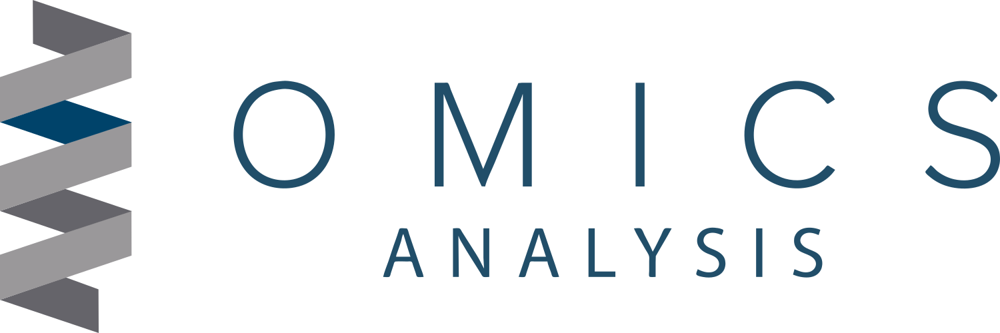

Metaganomica Completa

Pipeline metagenómica (directorios y archivos)
~/2025_demo_metagenomics/
├─ SRR1986202_1.fastq.gz
├─ SRR1986202_2.fastq.gzPreparar el workspace
cd ~/2025_demo_metagenomics
mkdir -p megahit_out metaquast_out mapping_out metabat_bins gtdbtk_out prokka_out kofam_out prodigal_outEnsamblado con MEGAHIT (paired-end)
Input
SRR1986202_1.fastq.gzySRR1986202_2.fastq.gz
Output (principales)
megahit_out/final.contigs.fa(FASTA con contigs)megahit_out/log(logs y archivos intermedios)
Comando
megahit -1 SRR1986202_1.fastq.gz -2 SRR1986202_2.fastq.gz -t 8 -o megahit_out(MEGAHIT detecta paired-end con -1 y -2).
head -n 5 megahit_out/final.contigs.fa
>contig_1 len=51234 cov=37.9
ATGCTAGCTAGCTGACTGATCGATCGATGCTAGCTAGCATCGATCGATCGATCG
>contig_2 len=18421 cov=12.4
GGTACGATCGATCGATGCTAGCTAGCTAGCTAGGCTAGCTAGCTAGCTAGCEvaluación del ensamblado con MetaQUAST
Input
megahit_out/final.contigs.fa
Output
metaquast_out/report.html(informe HTML)metaquast_out/report.tsv(tabla resumida)metaquast_out/plots/(gráficas)
Comando
metaquast.py megahit_out/final.contigs.fa -o metaquast_out -t 8(MetaQUAST es la versión de QUAST orientada a metagenomas).
head -n 5 metaquast_out/report.tsv
Assembly #contigs Total_length Largest_contig N50
megahit_out/final.contigs.fa 142 6,102,345 312345 61,230Mapear lecturas al ensamblado (Bowtie2 + samtools) — necesario para coverage/depth
Input
megahit_out/final.contigs.faSRR1986202_1.fastq.gz,SRR1986202_2.fastq.gz
Output
mapping_out/sample.sorted.bam(BAM ordenado)mapping_out/sample.sorted.bam.bai(index)mapping_out/sample.sam(si no se pipelínea)
Comandos
# Indexar el ensamblado para Bowtie2
bowtie2-build megahit_out/final.contigs.fa mapping_out/megahit_contigs
# Mapear pares (paired-end)
bowtie2 -x mapping_out/megahit_contigs -1 SRR1986202_1.fastq.gz -2 SRR1986202_2.fastq.gz -S mapping_out/sample.sam -p 8
# Convertir a BAM, ordenar e indexar
samtools view -bS mapping_out/sample.sam | samtools sort -@8 -o mapping_out/sample.sorted.bam
samtools index mapping_out/sample.sorted.bam(Usamos Bowtie2 para mapping; luego samtools para manejo de BAM).
samtools view mapping_out/sample.sorted.bam | head -n 5 (formato SAM->BAM mostrado como SAM)
SRR1986202_1 99 contig_1 1345 60 100M = 1420 175 ACTG... IIII...
SRR1986202_2 147 contig_1 1420 60 100M = 1345 -175 ACTG... IIII...
SRR1986202_1 99 contig_2 58 42 90M = 0 0 ACTG... IIII...
SRR1986202_2 147 contig_2 147 42 90M = 0 0 ACTG... IIII...Calcular cobertura por contig (jgi_summarize_bam_contig_depths) — para MetaBAT2
Input
mapping_out/sample.sorted.bam(BAM indexado)megahit_out/final.contigs.fa
Output
mapping_out/depth.txt(tabulado: contig vs depth por muestra)
Comando (ejemplo de 1 muestra)
# jgi_summarize_bam_contig_depths está en la distribución de MetaBAT2
jgi_summarize_bam_contig_depths --outputDepth mapping_out/depth.txt mapping_out/sample.sorted.bam(Este script resume la profundidad media por contig y la escribe en un formato que usa MetaBAT2).
head -n 6 mapping_out/depth.txt
contig sample1
contig_1 150.23
contig_2 45.78
contig_3 0.00
contig_4 12.34Binning con MetaBAT2
Input
megahit_out/final.contigs.famapping_out/depth.txt
Output
metabat_bins/bin.1.fa,metabat_bins/bin.2.fa, … (cada archivo = MAG candidate)- logs en
metabat_bins/
Comando
metabat2 -i megahit_out/final.contigs.fa -a mapping_out/depth.txt -o metabat_bins/bin -t 8(Generará metabat_bins/bin.1.fa, bin.2.fa, …).
head -n 6 metabat_bins/bin.1.fa
>bin.1_contig_5 len=312345 cov=45.6
ATGCTAGCTAGCTAGCTAGCTGATCGATCGATCGATCGATGCTAGCTAGCTAGC
>bin.1_contig_21 len=10234 cov=43.1
GGCATCGATCGATCGATCGATCGATCGATCGATCGATCGATCGATCGATCGAEvaluación de calidad de MAGs con CheckM (recomendado)
Input
- Directorio con bins
metabat_bins/ (cada *.fa).
Output
checkm_out/conlineage.msycheckm.report(tabla con completeness, contamination, strain-heterogeneity).
Comando
checkm lineage_wf -t 8 -x fa metabat_bins checkm_out
(Comando común para obtener completeness y contamination por bin).
checkm_out/checkm.report (primeras 5 líneas)
Bin Completeness Contamination Strain heterogeneity
bin.1 96.3 1.2 0.0
bin.2 45.0 5.6 12.5
bin.3 88.7 2.1 0.0Clasificación taxonómica de los MAGs con GTDB-Tk
Input
metabat_bins/(los*.facon cada bin)
Output
gtdbtk_out/con subdirectoriosclassify/y archivos comogtdbtk.bac120.summary.tsv,gtdbtk.bac120.classification.tsvy reportes*.tsv.
Comando (workflow recomendado)
gtdbtk classify_wf --genome_dir metabat_bins --out_dir gtdbtk_out --extension fa --cpus 8(GTDB-Tk ejecuta ani_screen, identify, align, classify y produce resúmenes por genoma).
head -n 6 gtdbtk_out/gtdbtk.bac120.summary.tsv
user_genome classification fastani_ref
bin.1.fa p__Proteobacteria; c__Gammaproteobacteria; o__Alteromonadales; f__Alteromonadaceae; g__Alteromonas ref_XYZ
bin.2.fa p__Actinobacteriota; c__Actinobacteria; o__Actinomycetales ref_ABCPredicción de genes/proteínas con Prodigal (modo metagenómico)
Por qué: kofamSCAN requiere secuencias de proteínas (aminoácidos) como input (FASTA de AA). Para obtenerlas a partir de contigs/bins usamos Prodigal en modo metagenómico.
Input
- Cada bin FASTA:
metabat_bins/bin.1.fa(o el ensamblado completo si prefieres)
Output
prodigal_out/bin.1.faa— secuencias proteicas (AA)prodigal_out/bin.1.ffn— secuencias de genes (nt)prodigal_out/bin.1.gbk— (opcional) GenBank
Comando (ejemplo por bin)
# modo meta para metagenomas
prodigal -i metabat_bins/bin.1.fa -a prodigal_out/bin.1.faa -d prodigal_out/bin.1.ffn -o prodigal_out/bin.1.gbk -p metahead -n 6 prodigal_out/bin.1.faa
>gene_00001 hypothetical protein [bin.1]
MARMKQLYVALLLGVV...
>gene_00002 transcriptional regulator [bin.1]
MTEYKLVVVGAG...Anotación con kofamSCAN (KOfam / KEGG orthology HMMs)
Requisitos previos
- Base KOfam (perfiles HMM y
ko_list) descargada desde el FTP de KEGG (p.ej.profiles/yko_list) — la README indica descargarprofiles.tar.gzyko_list.gz. kofam_scan(repo/exec_annotation).
Input
prodigal_out/bin.1.faa(FASTA de proteínas)- Base de perfiles KOfam: por ejemplo en
/path/to/kofam_db/profilesy/path/to/kofam_db/ko_list
Output
kofam_out/bin.1.kofam.detail.tsv(formato detallado) okofam_out/bin.1.kofam.mapper(formato mapper para KEGG Mapper) según-f- posibles alineamientos temporales en
--tmp-dir
Comando (ejemplo: formato mapper y detalle-tsv, 8 CPUs)
# opcion 1: formato detalle (más info)
exec_annotation -o kofam_out/bin.1.kofam.detail.tsv --cpu 8 --profile /path/to/kofam_db/profiles --ko-list /path/to/kofam_db/ko_list -f detail-tsv prodigal_out/bin.1.faa
# opcion 2: formato mapper (resumen KO por gen)
exec_annotation -o kofam_out/bin.1.kofam.mapper --cpu 8 --profile /path/to/kofam_db/profiles --ko-list /path/to/kofam_db/ko_list -f mapper prodigal_out/bin.1.faa(En algunos paquetes el script principal se llama exec_annotation; puedes también usar kofam_scan dependiendo de tu instalación. Revisa --help si usas la versión empaquetada).
head -n 6 kofam_out/bin.1.kofam.mapper
gene_00001 K00001
gene_00003 K03456
gene_00007 K00015head -n 6 kofam_out/bin.1.kofam.detail.tsv
gene_id K_number threshold score E-value definition
gene_00001 K00001 100.0 145.3 1e-50 Example KO definition ...
gene_00003 K03456 85.0 90.2 2e-20 Another KO ...Resumen final y archivos importantes en ~/2025_demo_metagenomics
./SRR1986202_1.fastq.gz, ./SRR1986202_2.fastq.gz # inputs raw
./megahit_out/final.contigs.fa # ensamblado MEGAHIT
./metaquast_out/report.html # evaluación ensamblado
./mapping_out/sample.sorted.bam # mapeo lecturas->contigs
./mapping_out/depth.txt # coverage per contig para binning
./metabat_bins/bin.*.fa # bins (MAGs)
./gtdbtk_out/ # clasificación taxonómica
./prodigal_out/*.faa # proteínas llamadas con Prodigal
./kofam_out/*.kofam.* # anotación kofamSCAN (KO assignments)